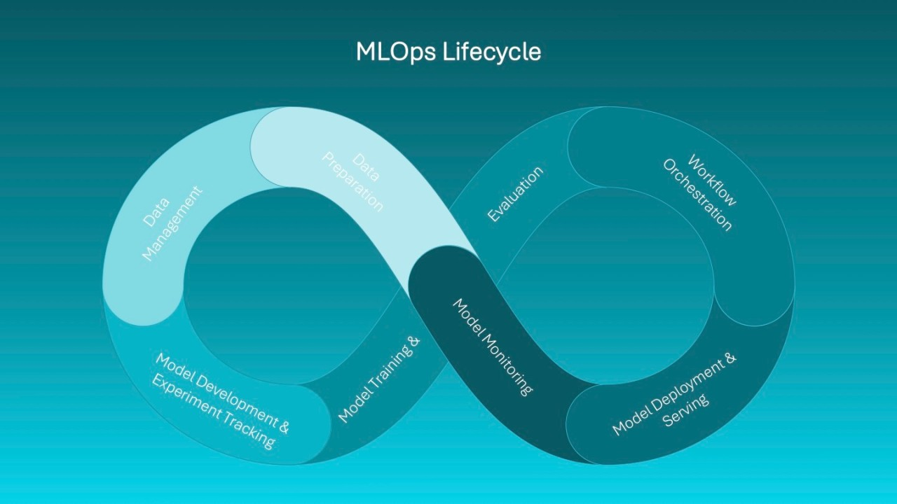

Experiment tracking is the process of recording every ML experiment — including datasets, features, algorithms, parameters, metrics, and outputs — so results can be compared and reproduced.

| Component | Examples |
|---|---|
| Data | Dataset version, size, source |
| Features | Scaling, encoding, transformations |
| Model | Algorithm, architecture |
| Parameters | Learning rate, depth, epochs |
| Metrics | Accuracy, F1, RMSE, AUC |
Model evaluation measures how well a trained model performs on unseen data and whether it is good enough for real-world deployment.
| Problem Type | Metrics |
|---|---|
| Classification | Accuracy, Precision, Recall, F1-score, AUC |
| Regression | MAE, MSE, RMSE, R² |
| Time-Series | MAPE, RMSE |
In industry, the best model is not always the most accurate. Engineers consider:
Use Case: Predict engine failure in vehicles.
Final model selected based on accuracy + latency trade-off.
Experiment tracking and model evaluation separate hobby ML from professional ML. Mastering these skills makes you an industry-ready ML engineer.